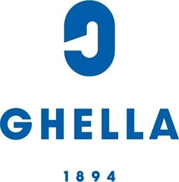

Trade Mark Journal No.2025/050 12 December 2025
WO0000001839121 (37,42)
Office of origin: European Union Intellectual Property Office (EUIPO)
Date of International Registration:7 November 2024
Date of designation in the UK:
7 November 2025

The mark contains the colours blue and white.
- Class 37
- Infrastructure construction; civil infrastructure construction; rail infrastructure construction; communications infrastructure construction; power infrastructure construction; installation of hydropower systems; construction of foundations for dams; construction of dams; grout building reinforcement for dams; excavation services; rental of earth moving equipment and excavators; advisory services relating to the reinstatement of trenches; construction of tunnels; tunnels (drilling of -); installation of plumbing; installation of hydraulic equipment; advisory services relating to the installation of hydraulic equipment; construction of motorways; maintenance of roads; construction services; construction consultancy; building construction supervision; construction information; rental of construction equipment; repair information; machinery installation, maintenance and repair; heavy engineering construction; installation of environmental engineering systems; underground civil engineering services; construction supervision of civil engineering projects; services for the rental of machinery for civil engineering; civil engineering [construction] consultancy; civil engineering underwater construction services; erection of scaffolding for civil engineering construction; construction of foundations for civil engineering structures; civil engineering relating to the prevention of inundation of buildings by flood water; civil engineering relating to the prevention of inundation of land by flood water; advisory services relating to the repair of civil engineering structures; coating services for the repair of marine engineering plant; installation of residential solar panel power systems; installation of non-residential solar panel power systems; maintenance and repair of solar thermal installations; maintenance and repair of solar power installations; installation and maintenance of solar thermal installations; installation of solar powered systems.
- Class 42
- Scientific research in the field of renewable energy; drafting and development of photovoltaic systems; design and development of regenerative energy generation systems; design and development of software for control, regulation and monitoring of solar energy systems; engineering research; research in the field of excavation; research and development services in the field of engineering; engineering services in the field of building technology; consultancy in the field of construction drafting; provision of information relating to industrial design; preparation of reports relating to industrial design; architectural design for town planning; design of pipelines; design of industrial plant; design of road networks; design of engineering works for flood prevention; design of engineering works for the prevention of inundation of buildings by flood water; design of engineering works for the prevention of inundation of land by flood water; design of engineering products; technical design and planning of pipelines for gas, water and waste water; technical design and planning of telecommunications networks; technical design and planning of power stations; technical design and planning of sewerage systems; technical design and planning of water purification plants; civil engineering; surveying [engineering]; levee engineering; engineering services; geoenvironmental engineering; structural engineering design services; civil engineering consultancy; design services relating to civil engineering; architectural and engineering services; engineering project studies; engineering consultancy services; research relating to mechanical engineering; preparation of engineering drawings; civil infrastructure engineering services; design and development of engineering products; technical consulting in the field of environmental engineering; civil engineering drawing services; advisory services relating to design engineering; engineering services in the field of environmental technology; engineering services for the gas industry; testing of apparatus in the field of electrical engineering; civil engineering planning services; advisory services relating to industrial engineering; technical consultancy services relating to civil engineering; engineering services relating to gas transport and supply systems; engineering services in the field of electrical power and natural gas production; analysis and testing services relating to electrical engineering apparatus; monitoring of activities which influence the environment within civil engineering structures; monitoring of events which influence the environment within civil engineering structures; civil infrastructure design services; analysis and testing for oil workings.
GHELLA S.P.A.
Representative: BARZANÒ & ZANARDO ROMA S.P.A., Via Piemonte 26, I-00187 Roma, ITALY